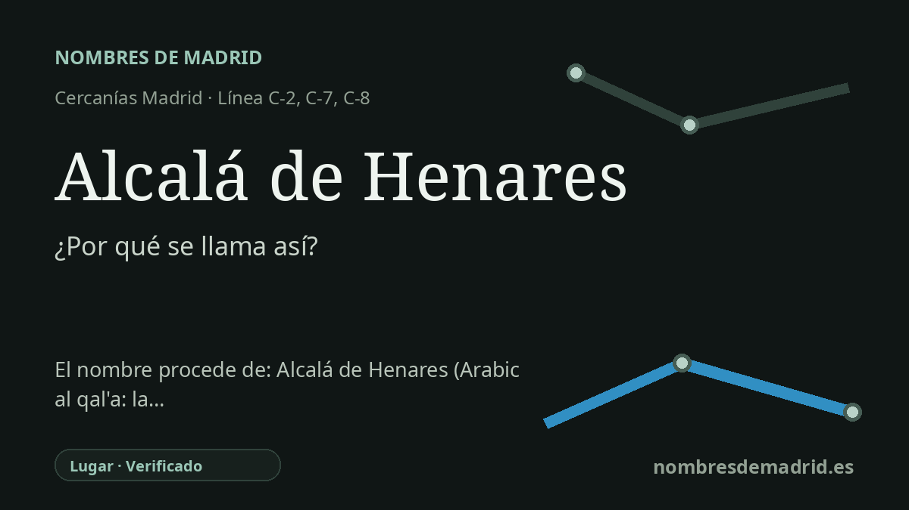

Publicado el · Investigación de Nombres de Madrid · Cómo verificamos cada origen · 8 fuentes consultadas
Respuesta rápida
La estación toma su nombre de Alcalá de Henares, la ciudad histórica a la que sirve. Alcalá conserva una palabra árabe para castillo o fortaleza, mientras que Henares es el nombre del río, explicado mejor como 'henares' o campos de heno.
La historia del nombre
La estación de Alcalá de Henares toma su nombre de la ciudad de Alcalá de Henares, al este de Madrid, en el corredor del Henares. Para los viajeros, el nombre es por tanto un topónimo municipal, no una dedicatoria a una persona, un acontecimiento o un edificio concreto. Adif identifica la estación como Alcalá de Henares, y la red de Cercanías Madrid de Renfe la sirve en los servicios del corredor C-2, C-7 y C-8.
La primera parte del nombre, Alcalá, es el elemento etimológico principal. Toponomasticon Hispaniae explica que el árabe andalusí qaláʿa, árabe clásico qalʿa, significaba 'fortaleza' o 'castillo', y lo identifica como origen de numerosos topónimos Alcalá. En el caso local, las fuentes turísticas y patrimoniales relacionan el nombre con la fortaleza hispanomusulmana de Qalʿat Abd al-Salam, levantada al otro lado del Henares en el siglo IX como parte del sistema defensivo de la Marca Media.
La ciudad, sin embargo, es anterior a su nombre árabe. La ciudad romana fue Complutum, situada junto al río Henares y recordada después en el adjetivo complutense. La documentación patrimonial municipal describe Complutum como una de las ciudades romanas más importantes del interior peninsular y la única urbe romana de esa entidad en la actual Comunidad de Madrid. Tras las fases islámica y medieval, el nombre Alcalá quedó asociado al lugar incluso cuando la población y la vida urbana volvieron a desplazarse hacia la llanura.
El segundo elemento, Henares, fija el nombre en el paisaje fluvial. La fuente etimológica más sólida localizada, Toponomasticon Hispaniae, deriva Henares del plural de henar, es decir, un lugar poblado de heno, en último término relacionado con el latín fēnu. Esta explicación es más precisa que la interpretación frecuente, pero más débil, que lo vincula con el árabe nahr, 'río'. El nombre del río da además segundo nombre a varias localidades de Guadalajara y Madrid, por lo que funciona como identificador regional.
Para el nombre de la estación, la interpretación mejor respaldada es sencilla: nombra a la ciudad, cuyo propio nombre alude, en términos generales, al castillo o fortaleza asociado al Henares. El origen árabe de Alcalá está muy bien respaldado; la explicación del río también lo está si se entiende como 'henares' o campos de heno, no como árabe. No constan nombres anteriores de la estación en fuentes autoritativas, y parece haber usado el nombre municipal desde los orígenes ferroviarios del siglo XIX.